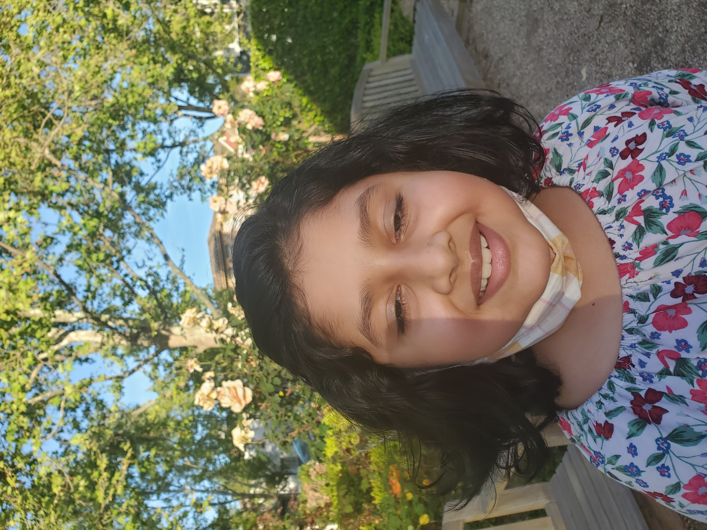
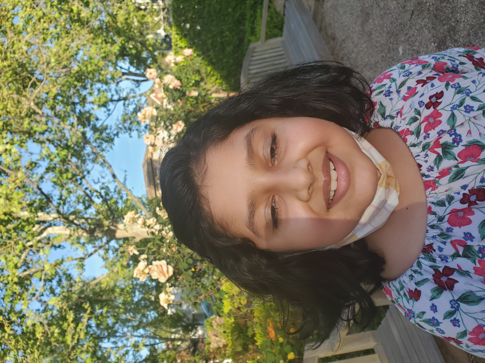

Our mascot, the snail

Our mascot, the snail
Hi, were the SNYC. You might be wondering what that stands for. It does, in fact, not stand for Sleeping Nosy Yellow Canaries, but for Save Nature in Your Community. Why is there a picture of a snail? Well, its our mascot. Before you say that's gross, let me tell you why. While slow, a slail can make an old decaying leaf disappear! Same with us! Except, of course, the fact that we are not eating decaying leaves. What do we do, if we don't eat leaves? The name kind of gives it away: We save nature! But you can too. We used to put up signs, but boys tore those down, so we work differently now. Now, we use small strips of paper and duct tape them to benches, poles, even flowerpots! We are thinking of having a yard sale or lemonade stand to raise money for the garden in the park. What were on the signs and slips? Well, we are trying to stop plucking, and the killing of small animals such as worms, snails, and ants.
 
